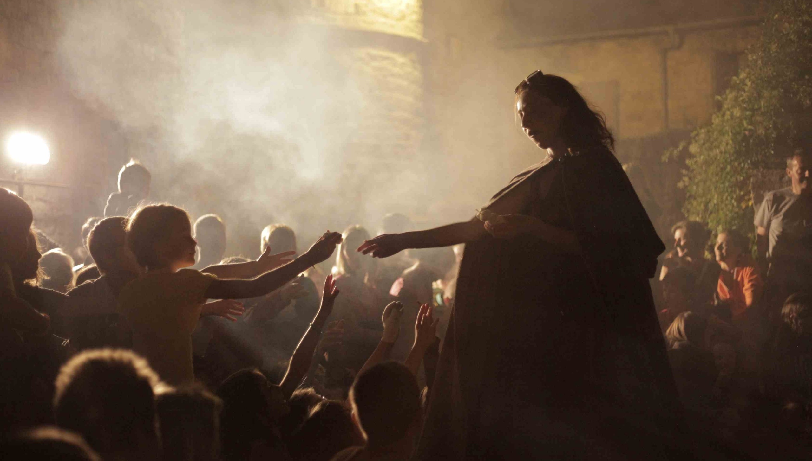

Créations
La Cité des Dragons
Juillet/août 2015 à 2018

Spectacle total : marionnettes géantes, musique, théâtre, projections ; cette nouvelle expérience théâtrale hors les murs part à la recherche des dragons endormis dans les ruelles de la cité de Sévérac-le-Château.
Partant d'une rencontre inopinée entre orient et occident, lors de cette déambulation nous explorons, non sans humour, le monde des monstres et des chimères.
Galerie
Le spectacle
Vous ne le savez sans doute pas Encore mais la cité de Sévérac le Château abrite de drôles de personnages. Il y a La Bestiole créée de toutes pièces, il y a aussi la magicienne dévoreuse de chamalow, mais il y a surtout ceux qui se cachent. Il paraît que dans la magie des ruelles gît un dragon solitaire qui ne se laisse apercevoir que par qui veut bien y croire. Ouvrez grands vos yeux et vos oreilles, peut-être en rencontrerez-vous un plus vite que prévu.
Laissez-vous guider par La Bestiole et découvrez l’histoire folle des dragons de la cité de Sévérac. Une déambulation pleine de surprises qui vous fera voyager dans le temps et de par le monde. Magie et musique vous accompagneront tout le long de cette soirée fantastique dont vous vous souviendrez encore longtemps.
Équipe de création
Écriture, mise en scène & costumes / Alice Tabart
Interprétation / Coline Lubin, Joël Sitbon & Alice Tabart
Création musicale / Kristen Annequin
Création vidéo, lumière et soutien technique / Christian Vialaret
Aide à la création des créatures / Emmanuel Borgetto
Stagiaires / Marion Guinot (administration), Pauline Lattaque (assitante mise en scène)
Production
Ce spectacle est créé avec le soutien du Conseil Départemental de l'Aveyron (aide à la résidence).
Nous remercions l'Ecole de Danse Virginie Gonzales ainsi que l'association Sévérac-Vidéo-Son.
Plus de details sur l’équipe et la production dans:
Spectateur(s) - un accident de théâtre
Saisons 2014-2015 et 2015-2016
Apparemment construite sur une série d'incidents et d'improvisations, cette tragi-comédie relate une fable contemporaine, quelque part entre l'Inde, New-York et la France.
Cette quête farfelue nous invite à réagir aux accidents de tous les jours et pose une question essentielle : sommes nous acteurs ou spectateurs de nos vies ?
SPECTATEUR(S) tente de renouer avec la fable et se construit entre drame et décalage : ni toute drôle, ni toute noire. On y cultive une forme de rire entre prise de conscience et force de libération.
Galerie


Équipe de création
Écriture, mise en scène & costumes / Alice Tabart
Interprétation / Simon Giesbert, Coline Lubin, Olivier Marchepoil ou Lucas Lemauff & Elsa Sanchez
Chorégraphies / Joël Sitbon & Elsa Sanchez
Création musicale / Simon Giesbert
Création lumière / Damien Peray & Serena Andreasi
Production
Une production de la compagnie Mesdames A, avec le soutien de la Commission Européenne (PEJA 2013), et du Conseil Général de la Haute-Garonne (aide à la création),en partenariat avec le CIAM, Mix’art Myrys et l’association ACT.
Encore plus de détails avec :


Le Satyre
Saisons 2012-2013 et 2013-2014
Le Satyre est un poème, ludique et épique, tiré de La Légende des Siècles de Victor Hugo.
Il nous entraîne, aux côtés d'une créature marginale et monstrueusement subversive dans un face à face avec les Dieux de l'Olympe.
Ombres et lumières, mots et jeux, musiques et danses, maniés avec habileté par deux comédiens, nous plongent dans une heure quinze de spectacle où le rire sert une réflexion très contemporaine sur le progrès, la place des puissants et la folle course de l'humanité.
Équipe de création
Mise en scène & costumes / Alice Tabart
Interprétation / Coline Lubin & Simon Giesbert
Création musicale / Simon Giesbert
Stagiaire / Charline Daligaud
Création affiche / Cécile Vallade
Galerie

Production
Une production de la compagnie Mesdames A, avec le soutien de l’association ACT-Mirail et du collectif Mix’art Myrys.
Plus de details sur l’équipe et la production dans:
Le Monologue d'une Tueuse
Saisons 2010-2011
Le Monologue d'une Tueuse, sous titré « Apologie d'un acte », est une pièce écrite en réaction à la représentation parfois assez basique des tueurs dans les séries télévisées ou au cinéma.
Face à ces représentations éloignées du réel profil des tueurs en série, cette pièce met en scène la figure fantasmée d'un personnage criminel à la fois plausible, fort et rebelle : une tueuse.
Galerie

Le spectacle
Comme elle est femme, sa présence devient inattendue et loin des évidences, elle nous permet d'aller plus loin, dans la pensée meurtrière quotidienne : dans les sources "raisonnables" de ses pulsions criminelles.
La forme du monologue évite à cette figure d'être le faire-valoir d'un héros ou d'une institution quelconque. Elle est simplement accompagnée d'une ombre, une conscience, personnage manipulateur-manipulé qui l'assiste tout au long de ses aveux. Ainsi, dans sa parole solitaire, la tueuse nous révèle plus profondément son rapport au monde.
Une femme seule, fait face à sa conscience (personnifiée) et à nos jugements.
Elle nous dit qui elle a tué et pourquoi.
Elle nous dit son absence de colère et sa paix intérieure. Simplement.
Mais elle ne nous dit pas comment elle tue.
Elle nous questionne : qui sommes-nous, nous à qui elle parle ?
Sommes-nous là ? Sommes-nous elle ?
Pouvons nous accepter ses raisons et ses motivations ?
Souvent, aussi, elle nous traite de moutons.
Équipe de création
Écriture, mise en scène & costumes / Alice Tabart
Interprétation / Coline Lubin & Alice Tabart
Création lumière / Malik Pavaux
Production
Une production de la compagnie Mesdames A. Retrouvez plus de détails :
En Route pour la joie
Saison 2009-2010


{kind=link}
{kind=link}
{kind=link}
{kind=link}
{kind=link}
{kind=link}
{kind=link}
{kind=link}
{kind=link}
{kind=link}
{kind=link}
{kind=link}
{kind=link}
{kind=link}
{kind=link}
{kind=link}
{kind=link}
{kind=link}
{kind=link}
{kind=link}
{kind=link}
{kind=link}
{kind=link}
{kind=link}
{kind=link}
{kind=link}